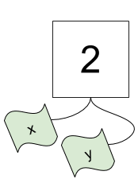

x = 2 # ZuweisungKontrollstrukturen
Komplexe Programme laufen nicht linear ab (also Zeile für Zeile vom Anfang eines Scripts bis zum Ende), sondern beinhalten Verzweigungen und Schleifen. Diese sogenannten Kontrollstrukturen steuern den Programmfluss. Wesentlich dabei sind Vergleiche, die bestimmen, ob bestimmte Codezeilen ausgeführt werden oder nicht bzw. wie oft diese wiederholt werden.
Vergleiche
Vergleiche sind logische Ausdrücke – ihr Ergebnis ist entweder wahr (True) oder falsch (False). In Python gibt es dafür den Datentyp bool. Folgende Vergleichsoperationen sind möglich:
- Gleichheit:
== - Ungleichheit:
!= - Kleiner:
< - Kleiner gleich:
<= - Größer:
> - Größer gleich:
>=
Man kann mehrere logische Ausdrücke mit den folgenden Operatoren verknüpfen:
- Und-Verknüpfung:
and - Oder-Verknüpfung:
or
Ein Ausdruck kann mit dem Operator not logisch invertiert werden (d.h. aus True wird False und aus False wird True). Weiters gibt es noch folgende Operatoren:
is: Identität (prüft, ob es sich um ein und dasselbe Objekt handelt, nicht nur um gleiche Werte)in: Prüft, ob ein Wert in einer Sequenz enthalten ist
Während == zwei Werte miteinander vergleicht, überprüft is zwei Objekte auf Gleichheit (also ob es sich um ein und dasselbe Objekt handelt).
Beispiele
x == 2 # VergleichTruex > 2Falsex < 10 and x > 5FalseDie vorige and-Verknüpfung von zwei Vergleichen kann in Python kürzer dargestellt werden:
5 < x < 10Falsex < 10 or x > 5 # macht das Sinn?Truey = 2x == y # Werte vergleichenTruex is y # Objekte vergleichenTrueWir können mit der Funktion id die IDs der Objekte x und y bestimmen:
id(x)4325411056id(y)4325411056Man erkennt, dass beide Objekte x und y dieselbe ID haben. Dies bedeutet, dass das zugrundeliegende Objekt 2 ein und dasselbe Objekt ist und lediglich zwei Namen x und y hat.

Die tatsächlichen IDs von Objekten sind ein Implementierungsdetail von Python, d.h. es ist nicht relevant, welche Zahl hier zurückgegeben wird. Dennoch kann man diese IDs verwenden, um zwei Objekte auf Gleichheit zu überprüfen, denn nur dann haben beide Objekte dieselbe ID.
Das folgende Beispiel veranschaulicht, dass es einen Unterschied zwischen Ganzzahlen (int) und Kommazahlen (float) gibt, obwohl deren Werte (zumindest mathematisch) gleich sein können.
c = 12
d = 12.0c == dTruec is dFalse
Tipp
In Python kann man Dezimalzahlen auch in der sogenannten wissenschaftlichen Notation anschreiben. Hier verwendet man eine Darstellung mit Zehnerpotenzen, die man in Python mit e eingeben kann – e kann man als “mal zehn hoch” lesen.
1e0 # 1 mal 10 hoch 01.0-4e0 # -4 mal 10 hoch 0-4.01e1 # 1 mal 10 hoch 110.03.5e2 # 3.5 mal 10 hoch 2350.01e-2 # 1 mal 10 hoch -20.011e-15 # 1 mal 10 hoch -15 = 0.0000000000000011e-15Bedingungen
Eine Bedingung wird in Python mit den Schlüsselwörtern if, elif und else realisiert. Dabei wird überprüft, ob ein Ausdruck wahr (True) oder falsch (False) ist. Nur falls dieser Ausdruck True ist, wird der nachfolgende eingerückte Codeblock ausgeführt, sonst nicht. Die grundsätzliche Struktur sieht wie folgt aus:
if <statement is True>:
<do something>
...
elif <statement is True>: # optional
<do something>
...
elif <statement is True>: # optional
<do something>
...
else: # optional
<do something>
...Zuerst gibt es eine Kopfzeile, welche mit dem Schlüsselword if eingeleitet wird. Danach folgt ein logischer Ausdruck (meist ein Vergleich), und zum Schluss wird die Kopfzeile mit einem : abgeschlossen. Der darauf folgende eingerückte Code wird nur ausgeführt, wenn der logische Ausdruck True ergibt – wenn das nicht der Fall ist, wird der gesamte eingerückte Codeblock übersprungen.
Nur wenn der erste Ausdruck True ist, wird also der eingerückte Code ausgeführt. Danach wird der gesamte restliche if/elif/else-Block verlassen, es wird also kein weiterer Code mehr ausgeführt. Wenn der erste Ausdruck False ist, wird der zugehörige Codeblock nicht ausgeführt und es wird zum nächsten elif-Ausdruck gesprungen (falls vorhanden). Hier wird dann ein weiterer logischer Ausdruck ausgewertet, und falls dieser True ist, wird der dazugehörige eingerückte Codeblock ausgeführt. Falls kein logischer Ausdruck in den elif-Zweigen True ist, wird schließlich der Codeblock im else-Zweig ausgeführt (falls vorhanden).
Wichtig
In einer Bedingung wird maximal ein Codeblock ausgeführt, nämlich der erste, dessen logischer Ausdruck True ergibt. Deshalb ist auch die Reihenfolge der einzelnen Zweige von Bedeutung.
Beispiele
Beginnen wir mit einem einfachen Beispiel, bei dem nur ein if-Zweig vorhanden ist:
a = 2
if a > 0:
print("a is a positive number")
print("this is good to know")a is a positive number
this is good to knowErgibt der Vergleich a > 0 also False, wird der eingerückte Code nicht ausgeführt:
a = -10
if a > 0:
print("a is a positive number")
print("this is good to know")Man kann optional einen else-Zweig verwenden, der immer dann ausgeführt wird, wenn alle vorhergehenden Zweige False waren:
a = 0
if a > 0:
print("a is a positive number")
print("this is good to know")
else:
print("a is either 0 or a negative number")a is either 0 or a negative numberSchließlich kann man noch mit elif beliebig viele weitere Zweige einbauen:
a = 0
if a > 0:
print("a is a positive number")
print("this is good to know")
elif a < 0:
print("a is a negative number")
else:
print("a is 0")a is 0Sobald ein Ausdruck in einem if-Block True ist, wird dieser ausgeführt und der gesamte Block wird verlassen. Es werden also keine weiteren Vergleiche mehr durchgeführt.
x = 2
if x == 2:
print("x is", x)
elif x > 0:
print("x is greater than 0")
elif x < 0:
print("x is negative")
else:
print("x is 0")x is 2Dementsprechend ist die Reihenfolge der einzelnen Zweige von Bedeutung:
a = 4
if a > 5:
print("One")
elif a < 10:
print("Two")
elif a == 4:
print("Three")
else:
print("Four")Twoa = 4
if a > 5:
print("One")
elif a == 4:
print("Three")
elif a < 10:
print("Two")
else:
print("Four")ThreeMan kann Vergleiche nicht nur mit Zahlen durchführen, sondern auch z.B. mit Strings:
s = "Python"
if s == "Python":
print("Way to go!")
elif s == "R":
print("Statistics")
else:
print("Unknown")Way to go!s = "R"
if s == "Python":
print("Way to go!")
elif s == "R":
print("Statistics")
else:
print("Unknown")Statisticsfor-Schleifen
Um Befehle zu wiederholen, gibt es die Möglichkeit, Schleifen zu verwenden. Eine häufig verwendete Schleifenart ist die sogenannte for-Schleife. Als einfaches Beispiel ersetzen wir folgenden repetitiven Code durch eine Schleife:
print("Hallo")
print("Hallo")
print("Hallo")Hallo
Hallo
Hallofor i in range(3):
print("Hallo")Hallo
Hallo
HalloDie sogenannte Schleifenvariable i nimmt hier in den drei Durchläufen drei verschiedene Werte 0, 1 und 2 an – dies sind nämlich genau die Werte, die der Funktionsaufruf range(3) zurückgibt. Der Name der Schleifenvariable kann beliebig gewählt werden, oft wird für kurze Schleifen einfach i verwendet (man könnte auch _ verwenden, um anzudeuten, dass man an diesem Namen eigentlich nicht weiter interessiert ist). Dieser Name bleibt nach dem Ausführen der Schleife übrigens bestehen, er unterscheidet sich nicht von anderen durch Zuweisung entstandenen Namen.
Tipp
Überlegen Sie, welchen Wert i am Ende des folgenden Beispiels hat:
i = 800
for i in range(3):
print("Hello")Die richtige Antwort lautet 2, da dies der letzte Wert ist, der in der Schleife zugewiesen wird. Der Funktionsaufruf range(3) erzeugt nämlich die drei Werte 0, 1 und 2. Die Zuweisung i = 800 zu Beginn hat hier überhaupt keinen Effekt. Anders ausgedrückt ist diese Zuweisung überflüssig und könnte ohne Auswirkungen entfernt werden, da die Schleife i unmittelbar danach nacheinander die Werte 0, 1 und 2 zuweist.
Die Funktion range wird mit range(start, stop, step) aufgerufen (der Hilfetext verrät dazu mehr Details) und erzeugt eine Sequenz, welche aus ganzen Zahlen besteht, die von start (optional) bis stop in der Schrittweite step (optional) läuft. Wenn man sich die einzelnen Elemente in einem range-Objekt ansehen will, muss man dieses zuerst in eine Liste umwandeln:
x = range(10)
xrange(0, 10)list(x)[0, 1, 2, 3, 4, 5, 6, 7, 8, 9]Grundsätzlich beginnt Python mit 0 zu zählen, d.h. auch range beginnt standardmäßig bei 0. Die letzte Zahl ist nicht mehr Teil der Sequenz, da man so einfach die Anzahl der erzeugten Elemente sehen kann (im Beispiel oben sieht man, dass range(10) aus 10 Elementen besteht).
In Python iteriert eine for-Schleife also eigentlich über alle Elemente einer Sequenz. Im folgenden Beispiel iteriert die Schleife über einen String, d.h. bei jedem Schleifendurchlauf werden die einzelnen Elemente (Buchstaben) eines Strings der Schleifenvariable s zugewiesen:
for s in "String":
print(s)S
t
r
i
n
gDies funktioniert genauso mit Listen, da diese auch zur Gruppe der Sequenzdatentypen gehören und mehrere Elemente beinhalten können:
a = ["Hello", "world!", "I", "love", "Python!"]
for element in a:
print(element)Hello
world!
I
love
Python!Der Befehl break bricht die Schleife vorzeitig ab. Python springt sofort ans Ende der Schleife und macht von hier mit der Ausführung der noch folgenden Befehlszeilen weiter.
i = 0
for c in "Suchstring":
if c == "u":
break # beende Schleife sofort
i += 1 # Abkürzung für i = i + 1
print(i)1Im Beispiel oben wird ein bestimmtes Zeichen in einem String gesucht, dessen Position dann in i abzulesen ist.
Der Befehl continue geht sofort zur nächsten Iteration der Schleife (überspringt also den restlichen Code der Schleife, der noch danach folgt).
for num in range(2, 10):
if num % 2 == 0: # gerade Zahl?
print("Found an even number", num)
continue # überspringe alle restlichen Zeilen innerhalb der Schleife
print("Found a number", num)Found an even number 2
Found a number 3
Found an even number 4
Found a number 5
Found an even number 6
Found a number 7
Found an even number 8
Found a number 9Details zu Strings und Listen folgen in den nächsten Einheiten.
while-Schleifen
Im Gegensatz zu for-Schleifen sind while-Schleifen gut geeignet, wenn nicht im Vorhinein klar ist, wie oft die Schleife durchlaufen werden soll. Im folgenden Beispiel wird eine sogenannte Endlosschleife verwendet (while True ist immer True). Zum Verlassen dieser Endlosschleife wird dann aber auf break zurückgegriffen. Die Funktion input wird verwendet, um Tastatureingaben vom Benutzer abzufragen – die eingegebenen Zeichen werden von dieser Funktion als String zurückgegeben.
while True:
line = input("> (enter 'q' to quit) ")
if line == "q":
breakEin weiteres Beispiel einer while-Schleife zeigt das folgende Zahlenratespiel:
number = 23 # diese Zahl soll erraten werden
while True:
guess = int(input("Enter an integer: "))
if guess == number:
print("Congratulations, you guessed it.")
break
elif guess < number:
print("No, it is a little higher than that.")
else:
print("No, it is a little lower than that.")
Tipp
Die Funktion int wird hier verwendet, um die Benutzereingabe (ein String) in eine Ganzzahl zu konvertieren (z.B. wandelt int("7") den String "7" in eine Zahl 7 um).
Übungen
Übung 1
Schreiben Sie folgendes Programm:
- Lesen Sie zuerst mit der Funktion
inputzwei Zahlen ein (weisen Sie diesen beiden Zahlen die Namenxundyzu). Beachten Sie, dassinputStrings zurückliefert und dass Sie diese mit der Funktionintin Ganzzahlen umwandeln können. - Wenn die Summe der beiden Zahlen größer als 50 ist, geben Sie
x + y > 50am Bildschirm aus. - Wenn die Summe der beiden Zahlen kleiner als 50 ist, geben Sie
x + y < 50am Bildschirm aus. - Ansonsten geben Sie
x + y == 50aus.
Tipp
Die Builtin-Funktion input ermöglicht es, Eingaben von der Tastatur einzulesen. Man kann beliebige Zeichen eingeben und mit der Eingabetaste bestätigen. Das Ergebnis der Eingabe wird dann von der Funktion zurückgegeben (d.h. man kann diesem Wert auch einen Namen zuweisen, z.B. x = input()). Der Typ des Rückgabewerts ist immer str.
Übung 2
Gegeben ist eine Liste lst = ["I", "love", "Python"]. Schreiben Sie eine for-Schleife, welche die einzelnen Elemente in der Liste mit print Zeile für Zeile am Bildschirm ausgibt.
Übung 3
Gegeben ist wieder eine Liste lst = ["I", "love", "Python"]. Schreiben Sie eine for-Schleife, welche über die einzelnen Elemente in der Liste iteriert. Eine zweite (geschachtelte) for-Schleife soll dann über jeden Buchstaben der einzelnen Strings iterieren und jeden Buchstaben einzeln gefolgt vom Zeichen - ausgeben.
Hinweis
Verwenden Sie die Funktion print mit dem Argument end="-". Die Ausgabe soll wie folgt aussehen:
I-l-o-v-e-P-y-t-h-o-n-Übung 4
Schreiben Sie das folgende verschachtelte if–else-Konstrukt als if–elif–else-Block:
if x > 0:
print("x is positive")
else:
if x < 0:
print("x is negative")
else:
print("x is equal to 0")Überprüfen Sie Ihre Lösung mit den drei Werten x = 5, x = -11 und x = 0 (d.h. bei beiden Varianten soll dasselbe Ergebnis herauskommen).
Übung 5
Schreiben Sie ein Programm, welches die Eingabe einer ganzen Zahl zwischen 1 und 10 erwartet. Falls die Eingabe nicht im erlaubten Bereich liegt, soll eine Meldung ausgegeben werden (“Invalid input. Please try again.”) und die Eingabe wiederholt werden. Falls die Eingabe im erlaubten Bereich liegt, soll die Schleife beendet werden und die eingegebene Zahl ausgegeben werden (z.B. “You entered: 5”).
Lösungen
Die Lösungen zu diesen Übungen finden Sie hier.